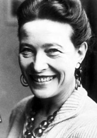

Simone de Beauvoir (1908-1986) foi uma renomada filósofa, escritora e feminista francesa
Simone de Beauvoir (1908-1986) foi uma filósofa, escritora e feminista francesa cujos pensamentos desafiaram as normas sociais e contribuíram para o movimento feminista. Ela acreditava na importância da liberdade e da igualdade de gênero, questionando as estruturas patriarcais e os papéis tradicionais atribuídos às mulheres. Sua obra mais famosa, "O Segundo Sexo", analisou a opressão das mulheres e defendeu a ideia de que a mulher não nasce, mas se torna mulher. Beauvoir foi uma figura influente no existencialismo e sua escrita continua a inspirar discussões sobre identidade, autonomia e empoderamento feminino.
Experiência Profissional
- Escritora renomada
- Filósofa influente
- Professora universitária
Habilidades e Especialidades
- - Pensadora crítica
- - Especialista em feminismo e igualdade de gênero
- - Análise cuidadosa e reflexiva
- - Escrita eloquente e persuasiva
- - Conhecimento profundo do existencialismo
- - Defensora dos direitos das mulheres e da liberdade individual